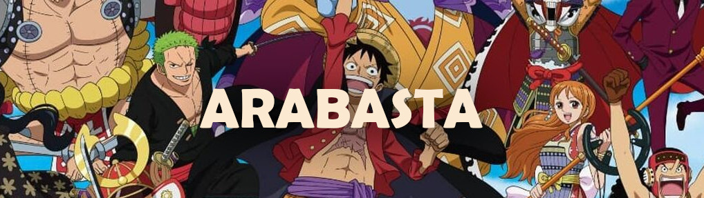
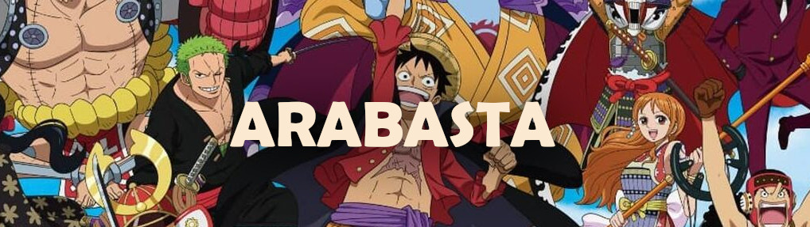

The second saga, titled Alabasta (or Baroque Works) Luffy and his crew follow in the search for one piece, in the boy's attempt to become the Pirate King. However, they need to help Nefertari Vivi to reach their homeland before a war begins. The problem is that a malicious organization will do everything to stop Luffy and his friends from arriving in Alabasta.